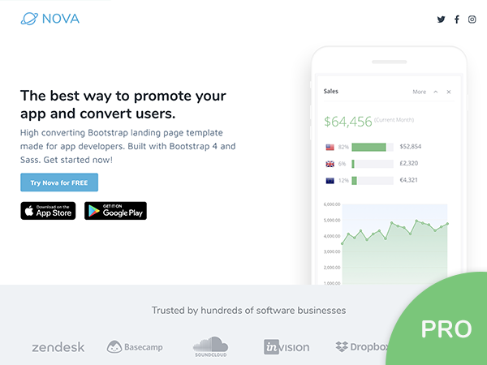

A current Temple Univerity graduate student, pursing a Professional Sustainability Masters in Geospatial Data Science.
Graduated with Schreyer Honors at Penn State University with a BS in Environmental Resource Management in 2024, minoring in Soil Science, Environmental Engineering, and Geographic Information Science. Passions in sustainability, and actively seeking careers that allow me to translate that passion into tangible actions for enhancing both the environment and the interaction between communities and the natural world.
About Me
Final Projects

New
Launch - The perfect Bootstrap template for SaaS products
You can promote your main project here. Suspendisse in tellus dolor. Vivamus a tortor eu turpis pharetra consequat quis non metus. Aliquam aliquam, orci eu suscipit pellentesque, mauris dui tincidunt enim, eget iaculis ante dolor non turpis. Ut enim ad minima veniam, quis nostrum exercitationem ullam corporis suscipit laboriosam.

CoderPro - Boootstrap Startup Template For Software Projects
You can put one of your secondary projects here. Suspendisse in tellus dolor. Vivamus a tortor eu turpis pharetra consequat quis non metus. Aliquam aliquam, orci eu suscipit pellentesque, mauris dui tincidunt enim, eget iaculis ante dolor non turpis.

DevCard - Boootstrap Portfolio Template for Software Developers
You can put one of your secondary projects here. Suspendisse in tellus dolor. Vivamus a tortor eu turpis pharetra consequat quis non metus. Aliquam aliquam, orci eu suscipit pellentesque, mauris dui tincidunt enim, eget iaculis ante dolor non turpis.

Instance - Boootstrap Portfolio Template for Aspiring Full Stack Developers
You can put one of your secondary projects here. Suspendisse in tellus dolor. Vivamus a tortor eu turpis pharetra consequat quis non metus. Aliquam aliquam, orci eu suscipit pellentesque, mauris dui tincidunt enim, eget iaculis ante dolor non turpis.

Nova Pro - Boootstrap Template for Mobile Startups
You can put one of your secondary projects here. Suspendisse in tellus dolor. Vivamus a tortor eu turpis pharetra consequat quis non metus.

DevStudio - Boootstrap Template for WebDev Agencies and Freelance Developers
You can put one of your secondary projects here. Quisque rutrum. Aenean imperdiet. Etiam ultricies nisi vel augue. Curabitur ullamcorper ultricies nisi.
Spring 2026 Coursework
Septa Bus Routes Visualization Javascript
Using Mapbox to visualize data on the web and Github to publish a web map to a public webpage..
ARC JS: Data-driven Continuous Color/Choropleth Map Javascript
Choropleth map of high school education across the contiguous U.S.Completed intermediate programming tasks in ArcGIS SDK environment.
Create a Proportional Symbol Map Javascript
An interactive web map of US electric power generation with layer control to compare the power produced from Biomass, Geothermal, and Solar.
Work Experience
Research and Development Associate
AmeriCorps VISTA: Coach Across America (2025 - 2026)
- Developed grant proposals to support ongoing research of youth-based sports programming.
- Partnered with Temple College of Public Health to organize and conduct data collection.
- Secured $7,345 in public grant funding to support out-of-school time programming.
Sustainability Lab Consultant
Penn State Sustainability (2023 - 2024)
- Conducted waste and energy audits to identify major contributors to labs’ carbon footprint.
- Improved lab community awareness of sustainable practices in research by 27%.
- Reduced carbon footprint and achieved Bronze Level Certification under My Green Lab.
Research Assistant
Penn State Plant Village (2023 - 2024)
- Developed baseline carbon stock calculator web application using spatial data and Python.
- Communicated thesis results and relevance to current climate change issues at symposium.
- Led creation and analysis of climate change opinions survey with over 1,000 participants.
Research Assistant
Penn State McPhillips Lab (2022 - 2023)
- Carried out fieldwork for soil samples, infiltration rates, moisture, and vegetation conditions.
- Executed soil chemistry tests to determine bulk density, texture, and organic matter content.
- Determined significant variables using ANOVA tests and visualized data as boxplots using R.
My GitHub
You can embed your GitHub contribution graph calendar using IonicaBizau's GitHub Calendar widget.
You can also embed your GitHub activities using Casey Scarborough's GitHub Activity Stream widget.